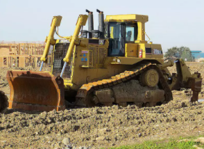
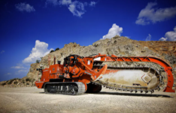
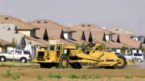

Excavators are large construction equipment that can be driven by tracks or wheels, but tracks are
more standard.
A conventional excavator has a long bucket arm attached to a pivoting cab that can rotate a full 360 degrees.
The
operator sits in the cab and from there has good visibility of the site. Excavators are highly versatile and
can be fitted with special attachments for specialty jobs. The most common uses for an excavator include:
Material handling
Excavating trenches, holes, and foundations
Brush cutting with hydraulic attachments
Demolition
Rough grading
Heavy lifting and
Mining
River dredging
Backhoe Loaders
Backhoe loaders, often called backhoes, have a body that's similar to a farm tractor and include an
adjustable shovel in front and a small bucket in the back for digging. Backhoe loaders are considered medium-sized
construction equipment for smaller jobs and are capable of working in limited space to perform various operations. They
can move dirt, backfill excavations, dig holes and trenches, and place pipes and other materials. One of the best
attributes of backhoe loaders is that they are wheel-driven and can be used in urban areas. They can even be driven to a
job site. The bucket in the back can be changed to dig trenches of different widths.
Bulldozers

Bulldozers are considered one of the strongest and most reliable heavy equipment used in the construction
industry. A bulldozer is a powerful and extremely heavy machine used to move dirt along large open tracts of land.
Bulldozers have a wide, flat blade in front that can be operated using two hydraulic pistons to move the blade in a
limited range of angles and depths. They are normally used to push piles of earth and for rough or fine grading,
depending on the size of the bulldozer. A bulldozer's considerable weight helps it crush large boulders, among other
operations.
Skid-Steer Loaders
Skid-steer loaders are among the most versatile machines available in the construction industry. They are
small and nimble and can turn within their own footprint, just like a tank, making them ideal for work in confined
spaces or in areas where construction activity has been finalized. Skid-steer loaders are wheel-driven and offer good
traction in snow and mud. The wheels also minimize soil compaction and damage to finished areas. These handy loaders
come in a few different sizes and can be outfitted with a variety of attachments to perform digging, drilling,
compacting, log grappling, snow blowing, jack-hammering, and other tasks.
Motor Graders
Motor graders are heavy equipment used for fine grading and for moving small amounts of dirt. They have a
long blade that can be adjusted to meet certain angles to create a flat surface. They can also be fitted with a second
blade in front of the front axle and in some instances can be used for underground mining. Motor graders are typically
used to fine-grade dirt or gravel roads or to prepare the road base course before placing asphalt. Graders can also be
used to create sloped surfaces or drainage ditches with shallow V-shaped cross-sections.
Crawler Loaders
A crawler loader is a cross between an excavator and a backhoe or bucket loader. Its tracks give it
excellent stability, and its versatile bucket makes it useful for moving soil and debris and for loading material onto
trucks. Crawler loaders are also used for excavation on relatively small projects. For larger-scale work, a hydraulic
excavator is often used instead of a crawler loader.
Trenchers

True to its name, a trencher is used to dig trenches, usually narrow trenches for piping and cabling.
Trenchers come in many different types and sizes, from small walk-behind versions to very large trenching machines that
can cut into asphalt pavement and other hard surfaces. The trencher has a conveyor system that carries the excavated
material and deposits it onto the ground next to the trench. Trenchers can use different digging implements depending on
the depth of the trench and material being excavated.
Scrapers

A scraper can move dirt and aggregates quickly around a construction site and is used primarily for digging
and leveling large areas of land. Scrapers are large heavy equipment designed for open areas, where they can run at high
speeds for cut and fill operations. Large self-propelled scrapers are called motor scrapers. There are also smaller
scrapers, called pull scrapers, that are pulled behind another vehicle.
Common Dump Trucks
Dump trucks are needed on almost every large job site. They offer limited function but perform the
all-important task of moving and dumping many types of heavy material. They are also road-ready so they can bring
material into or out of site and can travel anywhere large equipment is permitted. Dump trucks come in many different
sizes for different capacity and load needs, ranging from small utility-type trucks with dumping beds to enormous
machines used in mining operations.